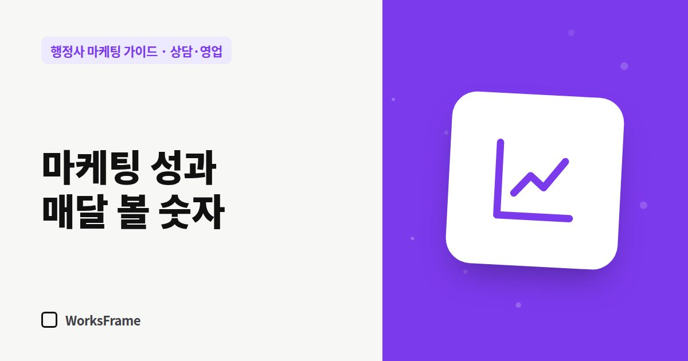

상담·영업
행정사 마케팅 성과, 매달 이 숫자만 보세요
한 줄 답
방문 수, 검색으로 들어온 수, 플레이스 조회·전화, 문의 수, 계약 수. 이 다섯 가지를 매달 같은 방식으로 적고, 문의가 어디서 왔는지 꼭 물어보세요.

홈페이지 방문자가 늘었다고 좋아할 일인지, 문의가 줄었다고 걱정할 일인지 판단하려면 같은 숫자를 매달 같은 방식으로 기록해야 합니다. 다섯 개면 충분합니다.
매달 기록할 숫자 다섯 개
| 숫자 | 도구 | 무엇을 알려 주나 |
|---|---|---|
| 1. 홈페이지 방문 | 방문 통계 도구 | 사람들이 오고 있나 |
| 2. 검색 유입 | 구글 서치 콘솔, 네이버 서치어드바이저 | 검색에서 찾아오나, 어떤 검색어로 |
| 3. 플레이스 조회·전화 | 스마트플레이스 통계 | 지도·지역 검색에서 보이나 |
| 4. 문의 수 | 전화·카톡·폼 합계 (직접 기록) | 연락으로 이어지나 |
| 5. 수임 수 | 상담 기록 | 일이 되나 |
숫자를 읽는 법
- 방문은 느는데 문의가 그대로 → 첫 화면·상담 버튼·업무 안내 페이지를 점검
- 검색 노출은 많은데 클릭이 적다 → 제목과 설명을 고객의 말로 고치기
- 문의는 많은데 수임이 적다 → 상담 응대와 견적 안내 점검 (전화 응대)
- 플레이스 조회가 적다 → 소개·키워드·사진 보강 (플레이스 채우기)
문의는 ‘어디서 왔는지’까지
문의를 받을 때 “어떻게 알고 연락 주셨어요?”를 물어 기록하세요. 검색, 플레이스, 소개, 광고, 블로그 중 어디가 일을 하는지 보입니다.
월간 리포트 한 장 양식
○월 리포트
- 숫자 5개 (지난달 대비)
- 이번 달 한 일: 새 글 ○편, 고친 글, 플레이스 소식
- 가장 많이 본 페이지 3개
- 문의 경로: 검색 ○ / 플레이스 ○ / 소개 ○ / 기타 ○
- 다음 달 할 일 3개
자주 묻는 질문
숫자가 매달 들쭉날쭉해요.
행정 업무는 계절과 제도 변경에 따라 문의가 몰리기도 합니다. 한 달보다 3개월 흐름을 보세요.
도구 설정이 어렵다면요?
처음에는 문의 수와 경로만 손으로 기록해도 됩니다. 가장 중요한 숫자는 결국 문의와 수임입니다.